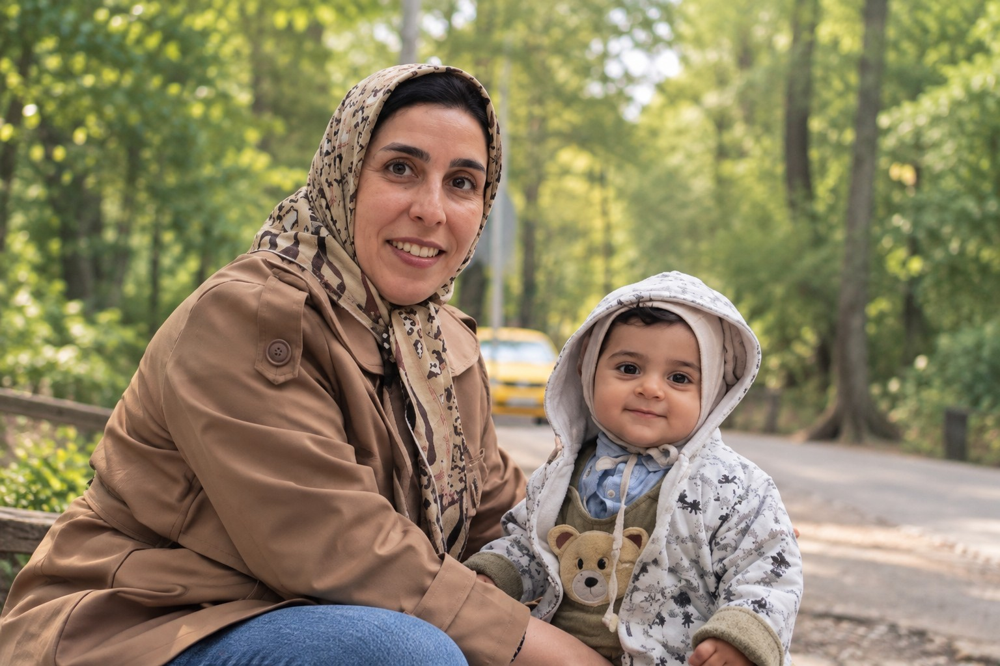

Product
Product Ownership, Product Management, Vision, Workflow, Requirements
PRODUCT · BACKEND · ANALYSIS
I connect product thinking, backend development and system analysis to turn complex business needs into clear, scalable digital products.

ABOUT ME
I’m a software product professional with more than 15 years of experience across backend development, system analysis and product ownership. My work has included call-center, VoIP and enterprise communication products.
I care about clear processes, reliable teamwork and turning complex requirements into practical product decisions.
SKILLS & TOOLS
Product Ownership, Product Management, Vision, Workflow, Requirements
PHP, Yii2, Laravel, REST APIs, ORM, Microservices
MySQL, MariaDB, PostgreSQL, Redis
BPMN, BPMS, UML, Enterprise Architect, Visio, ProcessMaker
SOLID, Clean Code, Git, Docker, HTML, CSS
ESB, LDAP, SOAP UI, system integration
EXPERIENCE
Leading the development of a voice and video contact-center product from ideation through deployment and customer adoption, with a strong focus on product analysis, process design and cross-functional coordination.
Managed an electronic service-desk project used by electricity distribution companies and worked with process analysis, ProcessMaker, BPMS and BPMN.
Built web systems with Yii2 and MariaDB, developed RESTful web services and worked with ORM and microservice concepts.
System analysis, web services, Yii2, MariaDB and service documentation, plus customization work on Siberian CMS and an augmented-reality app backend.
Contributed to web systems, server-side development and projects including Mashhad City Council systems.
AI & CONTINUOUS LEARNING
I’m exploring AI in real workflows—from ideation and content refinement to product thinking, research and development support.
LET’S CONNECT
I’m open to conversations around product, backend systems and meaningful digital experiences.